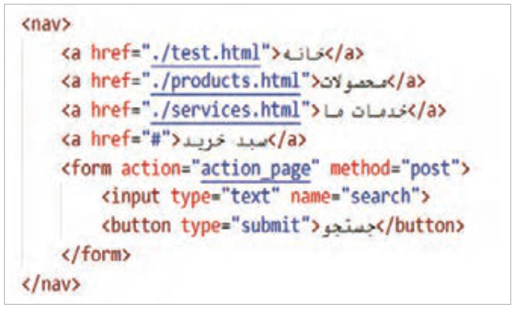

فرمها ابزارهای قدرتمندی برای جمعآوری اطلاعات از کاربران هستند. یک فرم ورود داده، اطلاعات کاربران را دریافت میکند و سپس آنها را برای پردازش و ذخیرهسازی به یک وبسرور ارسال مینماید. پردازش و ذخیرهسازی در سمت سرور انجام میشود. یک فرم اطلاعاتی شامل تگهای مختلفی برای دریافت دادههای کاربران است. این تگها به شرح زیر هستند:
action: این ویژگی مشخص میکند که دادههای فرم برای پردازش به چه آدرسی (URL) در سمت سرور ارسال شوند.
method: روش ارسال دادههای فرم را به سرور مشخص میکند. این ویژگی دارای دو مقدار get و post است. در روش get دادههای فرم به عنوان پارامترهای URL به سرور ارسال میشوند. این روش برای ارسال دادههای حساس کاربر مناسب نیست. در روش post اطلاعات فرم بهصورت پنهانی به سرور ارسال میشوند، این روش برای ارسال دادههای حساس مناسب است. درجدول صفحۀ بعد مقایسه دو روش ارسال اطلاعات به در فرمها را مشاهده کنید (جدول 5).
صفحه ۱۰۷
جدول ۵: مقایسه دو روش ارسال اطلاعات به در فرمها
عملیات
روش GET
روش POST
نحوه ارسال دادهها
دادهها از طریق نوار آدرس مرورگر ارسال میشوند و در نتیجه توسط کاربر مشاهده میشوند.
دادهها در بدنه درخواست HTTP ارسال میشوند و در URL مشاهده نمیشوند.
محدودیت حجم داده
مرورگرها در هنگام ارسال درخواست توسط روش GET دارای محدودیت هستند. بسته به نوع مرورگر و تنظیمات سرور، طول رشته قابل ارسال از طریق نوار آدرس بین 2000 تا 8000 کاراکتر است.
محدودیت کمی دارد و میتواند برای ارسال فایل و متنهای طولانی استفاده شود.
امنیت
امنیت پایینی دارد، علاوه بر نمایش دادههای کاربران در نوار آدرس، امکان ذخیره شدن محتوای آدرس (کش شدن) در حافظه مرورگر موجود است.
امنتر از روش GET است اما امنیت کامل ندارد، مگر اینکه از پروتکل HTTPS استفاده شود.
کاربردها
برای دریافت اطلاعات از سرور (مانند جستوجو و فیلتر کردن). در این حالت کاربر قصد تغییر دادههای سرور را ندارد.
برای ارسال اطلاعات به سرور جهت پردازش یا ذخیرهسازی (مانند ثبتنام، ورود، آپلود فایل)
صفحه ۱۰۸
یک فرم حاوی مجموعهای از عناصر برای دریافت اطلاعات مختلف از کاربران است که در جدول ۶ نمایش داده شده است:
جدول ۶: عناصر فرم (تگهایی که در عنصر فرم مورد استفاده قرار میگیرند) و کاربرد آنها
عنصر فرم
کاربرد و شکل کلی عنصر
<label>
تعیین برچسب عناصر فرم.
<label for=" "> </label>
<input>
دریافت اطلاعات مختلف از کاربر. نوع ورودی توسط ویژگی type مشخص میشود.
ویژگی type در عنصر <input> نوع داده ورودی کاربر را تعیین میکند. مقدار این ویژگی در جدول 7 تشریح شده است:
جدول ۷: مقادیر ویژگی type در عنصر <input>
مقدار ویژگی type
کاربرد
text, password, email
دریافت مقادیر متنی کوتاه مانند نام کاربری، کلمه عبور و ایمیل.
tel, number
دریافت شماره تلفن و مقادیر عددی.
radio
ایجاد لیستی از گزینهها که کاربر تنها مجاز به انتخاب یک گزینه باشد.
checkbox
ایجاد لیستی از گزینهها بهکار میرود که کاربر امکان انتخاب صفر، یک یا چند گزینه را دارد.
file
دریافت فایل از کاربران (آپلود).
submit
ایجاد دکمه ارسال اطلاعات
reset
محتوای فرم را پاک میکند.
صفحه ۱۰۹
برای ایجاد یک گروه دکمه رادیویی باید ویژگی name برای تمام دکمههای رادیویی گروه یکسان باشد، در غیراینصورت امکان انتخاب چند عنصر وجود دارد. دکمههای رادیویی معمولاً زمانی به کار میروند که انتخاب یک گزینه از میان چند گزینه مطرح باشد.
صفحه ۱۱۰
name: نام عنصر را تعیین میکند که در کدنویسی سمت سرور کاربرد دارد.
id: شناسه عنصر فرم را تعیین میکند که باید مقداری منحصر بهفرد باشد.
value: مقدار پیشفرض عنصر فرم را تعیین میکند.
required: استفاده از این ویژگی در عناصر فرم باعث میشود که در صورت خالی رها شدن یک فیلد پیغام خطا ظاهر شود.
ساختاردهی به صفحه با عناصر معنایی (Semantic Elements)
عناصر معنایی در HTML به عناصری اطلاق میشود که محتوای درون خود را به وضوح توصیف میکنند. استفاده از این عناصر باعث میشود که ابزارهای صفحهخوان و موتورهای جستوجو درک بهتری از ساختار و محتوای صفحه داشته باشند. عناصر معنایی نه تنها سئوی صفحه را بهبود میدهند، بلکه سازماندهی و نگهداری کد را سادهتر میکنند. این عناصر به شرح زیر هستند:
<main>: برای نمایش محتوای اصلی صفحه بهکار میرود. هر صفحه باید تنها یک عنصر <main> داشته باشد.
<header>: برای تعریف سرصفحه یک سند استفاده میشود. درون این تگ امکان استفاده از تگهای مختلفی مانند <h1>، <p>، <nav>، <ul>، <img> و <form> وجود دارد.
<nav>: در هنگام ایجاد منوهای ناوبری¹ استفاده میشود (شکل17).

شکل ۱۷
Page 106
Designing forms
Data-entry forms
Figure 16
Forms are powerful tools for collecting information from users. A data-entry form takes users' information and sends it to a web server to be processed and stored. Processing and storage happen on the server side. A form contains different tags for getting users' data. These tags are:
action: sets the address (URL) on the server to which the form's data is sent for processing.
method: روش ارسال دادههای فرم را به سرور مشخص میکند. این ویژگی دارای دو مقدار get و post است. در روش get دادههای فرم به عنوان پارامترهای URL به سرور ارسال میشوند. این روش برای ارسال دادههای حساس کاربر مناسب نیست. در روش post اطلاعات فرم بهصورت پنهانی به سرور ارسال میشوند، این روش برای ارسال دادههای حساس مناسب است. درجدول صفحۀ بعد مقایسه دو روش ارسال اطلاعات به در فرمها را مشاهده کنید (جدول 5).
Page 107
Table 5: Comparing the two ways of sending form data
Aspect
The GET method
The POST method
How the data is sent
The data is sent through the browser's address bar, so the user can see it.
The data is sent in the body of the HTTP request and cannot be seen in the URL.
Limit on data size
Browsers have limits when sending a request with GET. Depending on the browser and the server settings, the string sent through the address bar can be 2000 to 8000 characters long.
Has few limits and can be used to send files and long texts.
Security
Low security: besides showing users' data in the address bar, the address may be stored (cached) in the browser's memory.
Safer than GET, but not fully secure unless the HTTPS protocol is used.
Uses
Getting information from the server (such as searching and filtering), when the user does not intend to change data on the server.
Sending information to the server to be processed or stored (such as signing up, logging in, uploading a file)
Page 108
A form holds a set of elements for getting different information from users, shown in Table 6:
Table 6: عناصر فرم (تگهایی که در عنصر فرم مورد استفاده قرار میگیرند) و کاربرد آنها
Form element
Use and general form of the element
<label>
Sets the label of form elements.
<label for=" "> </label>
<input>
Gets different kinds of information from the user. The kind of input is set by the type attribute.
The type attribute of the <input> element sets the kind of data the user enters. Its values are described in Table 7:
Table 7: The values of the type attribute of the <input> element
Value of type
Use
text, password, email
Gets short text values such as a username, password, and email.
tel, number
Gets phone numbers and numeric values.
radio
Creates a list of options from which the user may choose only one.
checkbox
Creates a list of options from which the user can choose zero, one, or several.
file
Gets a file from the user (upload).
submit
Creates a button that sends the information
reset
Clears the content of the form.
Page 109
To create a group of radio buttons, the name attribute must be the same for all the radio buttons in the group; otherwise several of them could be selected. Radio buttons are usually used when one option must be chosen from several.
Page 110
name: sets the name of the element, which is used in server-side code.
id: sets the identifier of the form element, which must be unique.
value: sets the default value of the form element.
required: using this attribute in form elements shows an error message if a field is left empty.
Structuring the page with semantic elements (Semantic Elements)
Semantic elements in HTML are elements that clearly describe the content inside them. Using them helps screen readers and search engines understand the structure and content of the page better. Semantic elements not only improve the page's SEO but also make the code easier to organize and maintain. They are:
<main>: holds the main content of the page. Each page must have only one <main> element.
<header>: defines the header of a document. Inside this tag you can use tags such as <h1>, <p>, <nav>, <ul>, <img>, and <form>.
<nav>: used when creating navigation menus¹ (Figure 17).